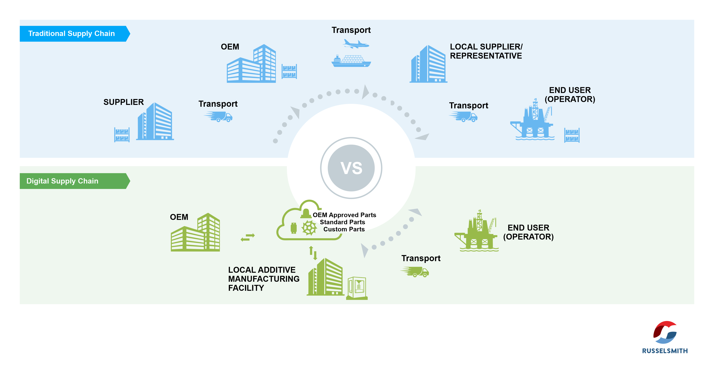

AI-Enhanced Supply Chain Management in Agriculture
From farmer to export market: forecasting, IoT RTDSS, AI quality grading, and logistics optimization — integrated in one responsible platform.
Sri Lanka → Global
Fruits & Vegetables
Responsible AI
Explore Components →
Traditional vs Digital Supply Chains
The transition from traditional supply chains to AI-enhanced digital ecosystems is reshaping how products move from suppliers to consumers. SmartHarvest applies similar transformation principles to agriculture — integrating forecasting, IoT, and AI for a transparent, efficient food supply network.
Source: Adapted visual comparison illustrating the shift from linear to intelligent, connected digital supply chains.
Site Sections
Vision
Sustainable AI supply chains for local & export.
OpenMission
Empower farmers, digitize post-harvest, ensure fairness.
OpenScope
Post-harvest F&V; Sri Lanka reference; scalable.
OpenObjectives
5 core objectives from research.
OpenComponents
4 AI pillars with examples.
OpenProcess
Farmer → collector → warehouse → QC → market.
OpenTrust
Anti-fraud, traceability, responsible AI.
OpenContact
smartharvest@smartharvest.lk
OpenTeam
Researchers, advisors & partners.
Open